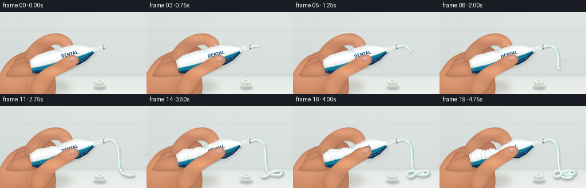
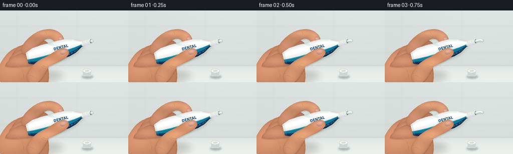

CODING AGENTS AS PIXEL WORLD MODELS
traex/GPT-6.1-Sol · phygen_014
点击播放 · 原生 RGB 像素
逐轮保存的候选
回放视频、检查图与代码变化。
每份候选均可单独播放。实际图片检查记录在下方工具轨迹中。
候选 01播放与检查图
点击播放 · 原生 RGB 像素


展开代码变化
--- 上一保存版本
+++ 本次保存版本
@@ -0,0 +1,245 @@
+import math
+from pathlib import Path
+import numpy as np
+from PIL import Image, ImageDraw, ImageFilter, ImageFont
+import artifact_io
+
+W,H,S=256,144,4
+WW,HH=W*S,H*S
+Y,X=np.mgrid[0:HH,0:WW].astype(np.float32); X/=S; Y/=S
+rng=np.random.default_rng(12)
+noise=rng.normal(0,1,(HH,WW)).astype(np.float32)
+
+def pts(p): return [(round(x*S),round(y*S)) for x,y in p]
+def bezier(a,b,c,d,n=35):
+ t=np.linspace(0,1,n)[:,None]
+ return (1-t)**3*np.array(a)+3*(1-t)**2*t*np.array(b)+3*(1-t)*t*t*np.array(c)+t**3*np.array(d)
+def path(start,segs):
+ p=[]; a=start
+ for b,c,d in segs:
+ p.extend(bezier(a,b,c,d)); a=d
+ return p
+
+def mask_path(p):
+ m=Image.new('L',(WW,HH)); ImageDraw.Draw(m).polygon(pts(p),fill=255); return m
+
+def line(im,p,fill,width=1):
+ d=ImageDraw.Draw(im); d.line(pts(p),fill=fill,width=max(1,int(width*S)),joint='curve')
+
+def shadow(im,mask,offset=(1,3),blur=2.2,alpha=.22):
+ m=Image.new('L',(WW,HH));m.paste(mask,(int(offset[0]*S),int(offset[1]*S)))
+ m=m.filter(ImageFilter.GaussianBlur(blur*S)).point(lambda x:int(x*alpha))
+ im.paste(Image.new('RGB',(WW,HH),(68,58,52)),(0,0),m)
+
+def skin(im,p,hi,folds=(),base=(194,132,99),shadow_on=False):
+ m=mask_path(p)
+ if shadow_on: shadow(im,m,(.6,1.5),1.1,.22)
+ # diffuse light, with smoothly rounded edges and fine skin texture
+ smooth=np.array(m.filter(ImageFilter.GaussianBlur(2.5*S)),dtype=np.float32)/255
+ light=np.zeros((HH,WW),np.float32)
+ for cx,cy,rx,ry,amp in hi:
+ light+=amp*np.exp(-((X-cx)/rx)**2-((Y-cy)/ry)**2)
+ shade=light-23*(1-smooth)+noise*.7
+ arr=np.stack([base[0]+shade,base[1]+shade*.87,base[2]+shade*.73],-1)
+ layer=Image.fromarray(np.uint8(np.clip(arr,0,255)))
+ im.paste(layer,(0,0),m)
+ for fp in folds:
+ line(im,fp,(157,99,74),.36)
+ line(im,[(a,b+.55) for a,b in fp],(222,163,126),.3)
+ return m
+
+def nail(im,cx,cy,ang,rx,ry):
+ a=math.radians(ang); co,si=math.cos(a),math.sin(a)
+ vs=[]
+ for th in np.linspace(0,2*math.pi,65):
+ xx=rx*math.cos(th); yy=ry*math.sin(th)
+ vs.append((cx+xx*co-yy*si,cy+xx*si+yy*co))
+ m=mask_path(vs)
+ g=np.exp(-((X-cx+1)/rx)**2-((Y-cy+1)/ry)**2)
+ arr=np.stack([191+40*g,133+43*g,118+37*g],-1)
+ im.paste(Image.fromarray(arr.astype(np.uint8)),(0,0),m)
+ # soft cuticle and translucent lunula
+ arc=[]
+ for th in np.linspace(.3,2.6,18):
+ xx=rx*math.cos(th);yy=ry*math.sin(th)
+ arc.append((cx+xx*co-yy*si,cy+xx*si+yy*co))
+ line(im,arc,(166,111,89),.4)
+ line(im,[(cx-rx*.45*co,cy-rx*.45*si-ry*.25),(cx+rx*.3*co,cy+rx*.3*si-ry*.25)],(237,191,173),.5)
+
+# fixed, shallow-focus bathroom setting
+bg=np.zeros((HH,WW,3),np.float32)
+fall=5*np.exp(-((X-206)/150)**2)
+for k,v in enumerate((218,224,222)): bg[:,:,k]=v+fall-(Y/144)*9
+bg+=noise[:,:,None]*.35
+background=Image.fromarray(np.uint8(bg))
+bd=ImageDraw.Draw(background)
+# unobtrusive tiles behind the close-up
+for yy in [32,85]:
+ bd.line(pts([(0,yy),(256,yy)]),fill=(198,209,206),width=S)
+for xx in [34,154]:
+ bd.line(pts([(xx,0),(xx,109)]),fill=(204,215,211),width=S)
+background=background.filter(ImageFilter.GaussianBlur(1.9*S))
+# luminous counter plane
+counter=(Y>=111).astype(np.float32)
+arr=np.array(background).astype(np.float32)
+for c,v in enumerate((228,233,230)):
+ arr[:,:,c]=np.where(Y>=111,v+(Y-111)*.22+noise*.28,arr[:,:,c])
+background=Image.fromarray(np.uint8(np.clip(arr,0,255)))
+line(background,[(0,110.7),(256,110.7)],(199,208,204),.65)
+# wall/counter seam softly shaded
+sm=Image.new('L',(WW,HH));ImageDraw.Draw(sm).line(pts([(0,112),(256,112)]),fill=65,width=3*S)
+sm=sm.filter(ImageFilter.GaussianBlur(2*S));background.paste((171,186,180),(0,0),sm)
+
+# Tube coordinates: metallic laminate, local longitudinal axis.
+ox,oy=54.,96.
+a=math.radians(-15); ex,ey=math.cos(a),math.sin(a); nx,ny=-ey,ex
+U=(X-ox)*ex+(Y-oy)*ey; V=(X-ox)*nx+(Y-oy)*ny
+
+def world(u,v=0): return (ox+u*ex+v*nx,oy+u*ey+v*ny)
+
+fontpaths=['/usr/share/fonts/truetype/dejavu/DejaVuSans-Bold.ttf','/usr/share/fonts/truetype/dejavu/DejaVuSans.ttf']
+font=ImageFont.truetype(fontpaths[0],38)
+small=ImageFont.truetype(fontpaths[1],14)
+label=Image.new('RGB',(640,180),(241,244,242));ld=ImageDraw.Draw(label)
+ld.rectangle((0,112,640,145),fill=(18,132,164))
+ld.rectangle((0,145,640,180),fill=(16,65,112))
+ld.polygon([(250,0),(295,0),(445,112),(401,112)],fill=(224,236,236))
+ld.text((310,48),'DENTAL',font=font,fill=(19,71,113))
+ld.text((333,93),'FRESH MINT',font=small,fill=(29,99,128))
+ld.text((405,150),'FLUORIDE ⢠100 ml',font=small,fill=(223,242,244))
+# white highlight and decorative slender colored accent
+ld.rectangle((0,107,640,110),fill=(101,191,200))
+tex=np.array(label)
+
+def tube(im,p):
+ # flattened centre and increasingly crumpled laminated tail
+ knots=[0,4,15,32,51,68,83,97,111,115]
+ rad=[11,13,17,19-7*p,19-11*p,19-7*p,18,14,6,5]
+ r=np.interp(U,knots,rad)
+ wr=p*(1.0*np.sin(U*1.16)+.5*np.sin(U*2.8))*np.exp(-((U-38)/28)**2)
+ r=r+wr
+ center=p*(1.5*np.sin(U*.27)*np.exp(-((U-44)/30)**2))
+ vv=V-center
+ m=((U>=0)&(U<=115)&(np.abs(vv)<=r))
+ mask=Image.fromarray((m*255).astype(np.uint8))
+ shadow(im,mask,(0,3),3,.25)
+ tx=np.clip(U/115*639,0,639).astype(int)
+ ty=np.clip((vv/r*.5+.5)*179,0,179).astype(int)
+ colors=tex[ty,tx].astype(np.float32)
+ n=np.clip(vv/r,-1,1)
+ # cylindrical highlight from upper left, muted highlights on flattened folds
+ shading=.76+.24*np.sqrt(np.maximum(0,1-n*n))-.115*n
+ shading+=.06*np.exp(-((n+.4)/.22)**2)
+ creases=p*np.exp(-((U-43)/30)**2)*(5*np.sin(U*1.4+V*.43)+3*np.sin(U*.7-V*.6))
+ colors=colors*shading[:,:,None]+creases[:,:,None]+noise[:,:,None]*.3
+ im.paste(Image.fromarray(np.uint8(np.clip(colors,0,255))),(0,0),mask)
+ # heat sealed end, compressed folds and soft specular wrinkle lines
+ for u in [1.2,2.5,3.8]:
+ rr=float(np.interp(u,knots,rad))
+ line(im,[world(u,-rr+1),world(u,rr-1)],(148,164,164),.45)
+ if p>.15:
+ for u0 in [13,21,28,38,52,67]:
+ rr=float(np.interp(u0,knots,rad))
+ fp=[world(u0-2,-rr*.75),world(u0+.4,-rr*.35),world(u0-1,0),world(u0+2,rr*.4)]
+ # use a translucent wrinkle overlay
+ over=Image.new('RGBA',(WW,HH));line(over,fp,(81,104,106,int(80*p)),.5)
+ line(over,[(x+.6,y-.3) for x,y in fp],(255,255,255,int(140*p)),.55)
+ im.paste(Image.alpha_composite(im.convert('RGBA'),over).convert('RGB'))
+ # rigid shoulder and short, exposed threaded neck
+ mneck=((U>=112)&(U<=132)&(np.abs(V)<=4.8))
+ arr=np.zeros((HH,WW,3),np.float32)
+ val=220+23*np.sqrt(np.maximum(0,1-(V/5)**2))-12*(V/5)
+ ribs=5*np.cos((U-114)*math.pi*1.25)
+ for k,off in enumerate((0,2,-2)):arr[:,:,k]=val+off+ribs
+ im.paste(Image.fromarray(np.uint8(np.clip(arr,0,255))),(0,0),Image.fromarray(np.uint8(mneck)*255))
+ # perpendicular thread collars
+ for u in [115,117,119,121,123,125,127,129]:
+ line(im,[world(u,-4.4),world(u,4.4)],(188,198,196),.55)
+ line(im,[world(u+.65,-4.1),world(u+.65,3.3)],(245,248,241),.4)
+ # actual open mouth ellipse, not a cap
+ c=world(132)
+ d=ImageDraw.Draw(im)
+ d.ellipse((int((c[0]-2.5)*S),int((c[1]-4.9)*S),int((c[0]+2.5)*S),int((c[1]+4.9)*S)),fill=(184,195,188))
+ d.ellipse((int((c[0]-1.6)*S),int((c[1]-3.4)*S),int((c[0]+1.8)*S),int((c[1]+3.4)*S)),fill=(57,91,83))
+ line(im,[(c[0]-.1,c[1]-4.4),(c[0]+1.7,c[1]-2.6)],(251,252,243),.7)
+ return c
+
+def cap(im):
+ # removed white screw cap rests on the countertop
+ m=Image.new('L',(WW,HH));d=ImageDraw.Draw(m);d.ellipse((163*S,129*S,186*S,137*S),fill=120)
+ m=m.filter(ImageFilter.GaussianBlur(1.6*S));im.paste((105,124,118),(0,0),m)
+ d=ImageDraw.Draw(im)
+ d.rounded_rectangle((165*S,121*S,182*S,132*S),radius=2*S,fill=(213,220,214))
+ for xx in np.arange(167,181,1.6):
+ line(im,[(xx,122.4),(xx,130.5)],(176,188,182),.5)
+ line(im,[(xx+.6,122.4),(xx+.6,130.5)],(241,244,237),.4)
+ d.ellipse((165*S,117*S,182*S,125*S),fill=(244,245,237),outline=(190,200,191),width=2)
+ d.ellipse((169*S,119*S,178*S,123*S),fill=(215,222,210))
+ line(im,[(168,120),(172,119)],(255,255,249),.6)
+
+# a continuous glossy, viscous strand: constant volume per extruded length
+start=world(133)
+full=path(start,[((195,57),(204,62),(207,74)),((209,88),(207,104),(212,115)),((216,122),(232,124),(236,119)),((241,112),(227,112),(215,119)),((208,126),(201,126),(200,120)),((199,114),(210,112),(224,117)),((237,122),(233,127),(221,126)),((210,126),(210,117),(220,114)),((229,111),(232,116),(226,120))])
+full=np.array(full)
+dist=np.r_[0,np.cumsum(np.linalg.norm(np.diff(full,axis=0),axis=1))]
+
+def paste(im,t):
+ length=1+dist[-1]*(t**1.65)
+ k=np.searchsorted(dist,length)
+ pp=full[:max(2,k+1)].copy()
+ if k<len(full) and k>0:
+ pp[-1]=full[k-1]+(full[k]-full[k-1])*((length-dist[k-1])/(dist[k]-dist[k-1]))
+ m=Image.new('L',(WW,HH));d=ImageDraw.Draw(m)
+ # smooth tube silhouette and round end; increasingly large accumulation
+ d.line(pts(pp),fill=255,width=int(5.3*S),joint='curve')
+ for x,y in [pp[0],pp[-1]]:
+ d.ellipse(((x-2.65)*S,(y-2.65)*S,(x+2.65)*S,(y+2.65)*S),fill=255)
+ ground=np.array(m);ground[Y<109]=0
+ shadow(im,Image.fromarray(ground),(1,3),1.7,.32)
+ # strand lit from top-left, soft gray underside, bright enamel white
+ shadow(im,m,(.8,1),.6,.15)
+ im.paste((185,207,203),(0,0),m)
+ line(im,[(x-.35,y-.5) for x,y in pp],(232,242,232),3.8)
+ line(im,[(x-.6,y-.8) for x,y in pp],(252,254,247),2.1)
+ # characteristic tiny turquoise stripe embedded along the rope
+ line(im,[(x+.65,y+.45) for x,y in pp],(78,176,189),.65)
+ line(im,[(x-.85,y-.75) for x,y in pp],(255,255,251),.6)
+ x,y=pp[-1]
+ d=ImageDraw.Draw(im);d.ellipse(((x-1.5)*S,(y-1.6)*S,(x+1.8)*S,(y+1.6)*S),fill=(235,246,236))
+
+frames=[]
+for frame in range(20):
+ t=frame/19; p=.06+.94*t**1.6
+ im=background.copy()
+ cap(im)
+ # hand contact shadow over counter
+ mm=Image.new('L',(WW,HH));ImageDraw.Draw(mm).ellipse(pts([(0,116),(126,146)]),fill=83)
+ mm=mm.filter(ImageFilter.GaussianBlur(6*S));im.paste((133,125,111),(0,0),mm)
+ # palm and wrist enter from the lower left; four fingers curl behind the tube
+ palm=path((-14,137),[((-3,114),(7,84),(33,74)),((49,64),(71,73),(80,91)),((97,105),(101,126),(95,150)),((64,156),(22,155),(-14,137))])
+ skin(im,palm,[(34,105,44,34,29),(8,126,33,34,12)],base=(188,125,91))
+ # little and ring fingers, partially occluded, natural joint creases
+ for j in range(3):
+ sx=38-j*7; sy=76+j*11; tipx=91-j*10; tipy=71+j*12+p*3
+ fp=path((sx-14,sy+14),[((sx-12,sy-2),(tipx-21,tipy-19),(tipx-3,tipy-11)),((tipx+9,tipy-7),(tipx+12,tipy+9),(tipx,tipy+13)),((tipx-13,tipy+16),(sx+3,sy+18),(sx-14,sy+14))])
+ skin(im,fp,[(sx+14,sy+3,25,10,24)],base=(186+j*3,122+j*3,91+j*2),shadow_on=True)
+ # index finger arches over the tube; fingertip settles as squeeze grows
+ dy=7*p
+ finger=path((42,77),[((47,60),(72,39),(91,38)),((106,35),(122,43),(126,53+dy)),((131,63+dy),(125,72+dy),(116,70+dy)),((108,69+dy),(110,57+dy),(98,56+dy)),((85,56),(71,76),(59,86)),((52,90),(42,88),(42,77))])
+ skin(im,finger,[(89,45,29,8,34),(117,55+dy,11,12,31),(58,70,13,14,17)],folds=[[(79,48),(84,51),(86,54)],[(91,43),(93,48),(93,51)],[(114,61+dy),(118,62+dy),(122,61+dy)]],shadow_on=True)
+ nail(im,121,57+dy,62,6,3.9)
+ # the deforming tube lies above curled fingers
+ tube(im,p)
+ # broad foreground thumb pad presses inward. Its motion directly follows collapse.
+ shift=-6*p
+ thumb=path((53,130),[((57,115),(73,101),(88,95+shift)),((98,91+shift),(114,76+shift),(127,76+shift)),((137,76+shift),(141,85+shift),(134,92+shift)),((126,101+shift),(110,106+shift),(97,113)),((88,128),(81,146),(64,148)),((58,145),(53,139),(53,130))])
+ skin(im,thumb,[(94,106+shift,25,13,38),(123,85+shift,15,10,33),(68,131,15,18,22)],folds=[[(85,110+shift),(91,114+shift),(97,114+shift)],[(82,112+shift),(87,116+shift),(92,117+shift)],[(59,130),(65,131),(69,134)]],base=(195,131,95),shadow_on=True)
+ nail(im,127,83+shift,-29,8.3,4.7)
+ # light wrinkles at thumb base and palm (no hard outlines)
+ line(im,[(34,109),(41,115),(47,126),(47,135)],(158,101,71),.45)
+ line(im,[(35,110),(42,116),(48,127)],(219,153,111),.5)
+ paste(im,t)
+ # restrained photographic grain and downsampled, anti-aliased detail
+ im=im.resize((W,H),Image.Resampling.LANCZOS)
+ frames.append(np.asarray(im,dtype=np.uint8))
+artifact_io.save(np.stack(frames),Path(__file__).parent)
可观测工具轨迹
实际执行的命令与返回图片。
命令 1exit 0
/bin/bash -lc "ls -la && cat prompt.txt && printf '\\n--- RULES ---\\n' && cat GENERATION_RULES.md && printf '\\n--- SPEC ---\\n' && cat task_spec.json"
命令 2exit 0
/bin/bash -lc "cat artifact_io.py && python - <<'PY' import PIL,numpy print(PIL.__version__) PY"
命令 3exit 0
/bin/bash -lc "cat > generate.py <<'PY'
import math
from pathlib import Path
import numpy as np
from PIL import Image, ImageDraw, ImageFilter, ImageFont
import artifact_io
W,H,S=256,144,4
WW,HH=W*S,H*S
Y,X=np.mgrid[0:HH,0:WW].astype(np.float32); X/=S; Y/=S
rng=np.random.default_rng(12)
noise=rng.normal(0,1,(HH,WW)).astype(np.float32)
def pts(p): return [(round(x*S),round(y*S)) for x,y in p]
def bezier(a,b,c,d,n=35):
t=np.linspace(0,1,n)[:,None]
return (1-t)**3*np.array(a)+3*(1-t)**2*t*np.array(b)+3*(1-t)*t*t*np.array(c)+t**3*np.array(d)
def path(start,segs):
p=[]; a=start
for b,c,d in segs:
p.extend(bezier(a,b,c,d)); a=d
return p
def mask_path(p):
m=Image.new('L',(WW,HH)); ImageDraw.Draw(m).polygon(pts(p),fill=255); return m
def line(im,p,fill,width=1):
d=ImageDraw.Draw(im); d.line(pts(p),fill=fill,width=max(1,int(width*S)),joint='curve')
def shadow(im,mask,offset=(1,3),blur=2.2,alpha=.22):
m=Image.new('L',(WW,HH));m.paste(mask,(int(offset[0]*S),int(offset[1]*S)))
m=m.filter(ImageFilter.GaussianBlur(blur*S)).point(lambda x:int(x*alpha))
im.paste(Image.new('RGB',(WW,HH),(68,58,52)),(0,0),m)
def skin(im,p,hi,folds=(),base=(194,132,99),shadow_on=False):
m=mask_path(p)
if shadow_on: shadow(im,m,(.6,1.5),1.1,.22)
# diffuse light, with smoothly rounded edges and fine skin texture
smooth=np.array(m.filter(ImageFilter.GaussianBlur(2.5*S)),dtype=np.float32)/255
light=np.zeros((HH,WW),np.float32)
for cx,cy,rx,ry,amp in hi:
light+=amp*np.exp(-((X-cx)/rx)**2-((Y-cy)/ry)**2)
shade=light-23*(1-smooth)+noise*.7
arr=np.stack([base[0]+shade,base[1]+shade*.87,base[2]+shade*.73],-1)
layer=Image.fromarray(np.uint8(np.clip(arr,0,255)))
im.paste(layer,(0,0),m)
for fp in folds:
line(im,fp,(157,99,74),.36)
line(im,[(a,b+.55) for a,b in fp],(222,163,126),.3)
return m
def nail(im,cx,cy,ang,rx,ry):
a=math.radians(ang); co,si=math.cos(a),math.sin(a)
vs=[]
for th in np.linspace(0,2*math.pi,65):
xx=rx*math.cos(th); yy=ry*math.sin(th)
vs.append((cx+xx*co-yy*si,cy+xx*si+yy*co))
m=mask_path(vs)
g=np.exp(-((X-cx+1)/rx)**2-((Y-cy+1)/ry)**2)
arr=np.stack([191+40*g,133+43*g,118+37*g],-1)
im.paste(Image.fromarray(arr.astype(np.uint8)),(0,0),m)
# soft cuticle and translucent lunula
arc=[]
for th in np.linspace(.3,2.6,18):
xx=rx*math.cos(th);yy=ry*math.sin(th)
arc.append((cx+xx*co-yy*si,cy+xx*si+yy*co))
line(im,arc,(166,111,89),.4)
line(im,[(cx-rx*.45*co,cy-rx*.45*si-ry*.25),(cx+rx*.3*co,cy+rx*.3*si-ry*.25)],(237,191,173),.5)
# fixed, shallow-focus bathroom setting
bg=np.zeros((HH,WW,3),np.float32)
fall=5*np.exp(-((X-206)/150)**2)
for k,v in enumerate((218,224,222)): bg[:,:,k]=v+fall-(Y/144)*9
bg+=noise[:,:,None]*.35
background=Image.fromarray(np.uint8(bg))
bd=ImageDraw.Draw(background)
# unobtrusive tiles behind the close-up
for yy in [32,85]:
bd.line(pts([(0,yy),(256,yy)]),fill=(198,209,206),width=S)
for xx in [34,154]:
bd.line(pts([(xx,0),(xx,109)]),fill=(204,215,211),width=S)
background=background.filter(ImageFilter.GaussianBlur(1.9*S))
# luminous counter plane
counter=(Y>=111).astype(np.float32)
arr=np.array(background).astype(np.float32)
for c,v in enumerate((228,233,230)):
arr[:,:,c]=np.where(Y>=111,v+(Y-111)*.22+noise*.28,arr[:,:,c])
background=Image.fromarray(np.uint8(np.clip(arr,0,255)))
line(background,[(0,110.7),(256,110.7)],(199,208,204),.65)
# wall/counter seam softly shaded
sm=Image.new('L',(WW,HH));ImageDraw.Draw(sm).line(pts([(0,112),(256,112)]),fill=65,width=3*S)
sm=sm.filter(ImageFilter.GaussianBlur(2*S));background.paste((171,186,180),(0,0),sm)
# Tube coordinates: metallic laminate, local longitudinal axis.
ox,oy=54.,96.
a=math.radians(-15); ex,ey=math.cos(a),math.sin(a); nx,ny=-ey,ex
U=(X-ox)*ex+(Y-oy)*ey; V=(X-ox)*nx+(Y-oy)*ny
def world(u,v=0): return (ox+u*ex+v*nx,oy+u*ey+v*ny)
fontpaths=['/usr/share/fonts/truetype/dejavu/DejaVuSans-Bold.ttf','/usr/share/fonts/truetype/dejavu/DejaVuSans.ttf']
font=ImageFont.truetype(fontpaths[0],38)
small=ImageFont.truetype(fontpaths[1],14)
label=Image.new('RGB',(640,180),(241,244,242));ld=ImageDraw.Draw(label)
ld.rectangle((0,112,640,145),fill=(18,132,164))
ld.rectangle((0,145,640,180),fill=(16,65,112))
ld.polygon([(250,0),(295,0),(445,112),(401,112)],fill=(224,236,236))
ld.text((310,48),'DENTAL',font=font,fill=(19,71,113))
ld.text((333,93),'FRESH MINT',font=small,fill=(29,99,128))
ld.text((405,150),'FLUORIDE ⢠100 ml',font=small,fill=(223,242,244))
# white highlight and decorative slender colored accent
ld.rectangle((0,107,640,110),fill=(101,191,200))
tex=np.array(label)
def tube(im,p):
# flattened centre and increasingly crumpled laminated tail
knots=[0,4,15,32,51,68,83,97,111,115]
rad=[11,13,17,19-7*p,19-11*p,19-7*p,18,14,6,5]
r=np.interp(U,knots,rad)
wr=p*(1.0*np.sin(U*1.16)+.5*np.sin(U*2.8))*np.exp(-((U-38)/28)**2)
r=r+wr
center=p*(1.5*np.sin(U*.27)*np.exp(-((U-44)/30)**2))
vv=V-center
m=((U>=0)&(U<=115)&(np.abs(vv)<=r))
mask=Image.fromarray((m*255).astype(np.uint8))
shadow(im,mask,(0,3),3,.25)
tx=np.clip(U/115*639,0,639).astype(int)
ty=np.clip((vv/r*.5+.5)*179,0,179).astype(int)
colors=tex[ty,tx].astype(np.float32)
n=np.clip(vv/r,-1,1)
# cylindrical highlight from upper left, muted highlights on flattened folds
shading=.76+.24*np.sqrt(np.maximum(0,1-n*n))-.115*n
shading+=.06*np.exp(-((n+.4)/.22)**2)
creases=p*np.exp(-((U-43)/30)**2)*(5*np.sin(U*1.4+V*.43)+3*np.sin(U*.7-V*.6))
colors=colors*shading[:,:,None]+creases[:,:,None]+noise[:,:,None]*.3
im.paste(Image.fromarray(np.uint8(np.clip(colors,0,255))),(0,0),mask)
# heat sealed end, compressed folds and soft specular wrinkle lines
for u in [1.2,2.5,3.8]:
rr=float(np.interp(u,knots,rad))
line(im,[world(u,-rr+1),world(u,rr-1)],(148,164,164),.45)
if p>.15:
for u0 in [13,21,28,38,52,67]:
rr=float(np.interp(u0,knots,rad))
fp=[world(u0-2,-rr*.75),world(u0+.4,-rr*.35),world(u0-1,0),world(u0+2,rr*.4)]
# use a translucent wrinkle overlay
over=Image.new('RGBA',(WW,HH));line(over,fp,(81,104,106,int(80*p)),.5)
line(over,[(x+.6,y-.3) for x,y in fp],(255,255,255,int(140*p)),.55)
im.paste(Image.alpha_composite(im.convert('RGBA'),over).convert('RGB'))
# rigid shoulder and short, exposed threaded neck
mneck=((U>=112)&(U<=132)&(np.abs(V)<=4.8))
arr=np.zeros((HH,WW,3),np.float32)
val=220+23*np.sqrt(np.maximum(0,1-(V/5)**2))-12*(V/5)
ribs=5*np.cos((U-114)*math.pi*1.25)
for k,off in enumerate((0,2,-2)):arr[:,:,k]=val+off+ribs
im.paste(Image.fromarray(np.uint8(np.clip(arr,0,255))),(0,0),Image.fromarray(np.uint8(mneck)*255))
# perpendicular thread collars
for u in [115,117,119,121,123,125,127,129]:
line(im,[world(u,-4.4),world(u,4.4)],(188,198,196),.55)
line(im,[world(u+.65,-4.1),world(u+.65,3.3)],(245,248,241),.4)
# actual open mouth ellipse, not a cap
c=world(132)
d=ImageDraw.Draw(im)
d.ellipse((int((c[0]-2.5)*S),int((c[1]-4.9)*S),int((c[0]+2.5)*S),int((c[1]+4.9)*S)),fill=(184,195,188))
d.ellipse((int((c[0]-1.6)*S),int((c[1]-3.4)*S),int((c[0]+1.8)*S),int((c[1]+3.4)*S)),fill=(57,91,83))
line(im,[(c[0]-.1,c[1]-4.4),(c[0]+1.7,c[1]-2.6)],(251,252,243),.7)
return c
def cap(im):
# removed white screw cap rests on the countertop
m=Image.new('L',(WW,HH));d=ImageDraw.Draw(m);d.ellipse((163*S,129*S,186*S,137*S),fill=120)
m=m.filter(ImageFilter.GaussianBlur(1.6*S));im.paste((105,124,118),(0,0),m)
d=ImageDraw.Draw(im)
d.rounded_rectangle((165*S,121*S,182*S,132*S),radius=2*S,fill=(213,220,214))
for xx in np.arange(167,181,1.6):
line(im,[(xx,122.4),(xx,130.5)],(176,188,182),.5)
line(im,[(xx+.6,122.4),(xx+.6,130.5)],(241,244,237),.4)
d.ellipse((165*S,117*S,182*S,125*S),fill=(244,245,237),outline=(190,200,191),width=2)
d.ellipse((169*S,119*S,178*S,123*S),fill=(215,222,210))
line(im,[(168,120),(172,119)],(255,255,249),.6)
# a continuous glossy, viscous strand: constant volume per extruded length
start=world(133)
full=path(start,[((195,57),(204,62),(207,74)),((209,88),(207,104),(212,115)),((216,122),(232,124),(236,119)),((241,112),(227,112),(215,119)),((208,126),(201,126),(200,120)),((199,114),(210,112),(224,117)),((237,122),(233,127),(221,126)),((210,126),(210,117),(220,114)),((229,111),(232,116),(226,120))])
full=np.array(full)
dist=np.r_[0,np.cumsum(np.linalg.norm(np.diff(full,axis=0),axis=1))]
def paste(im,t):
length=1+dist[-1]*(t**1.65)
k=np.searchsorted(dist,length)
pp=full[:max(2,k+1)].copy()
if k<len(full) and k>0:
pp[-1]=full[k-1]+(full[k]-full[k-1])*((length-dist[k-1])/(dist[k]-dist[k-1]))
m=Image.new('L',(WW,HH));d=ImageDraw.Draw(m)
# smooth tube silhouette and round end; increasingly large accumulation
d.line(pts(pp),fill=255,width=int(5.3*S),joint='curve')
for x,y in [pp[0],pp[-1]]:
d.ellipse(((x-2.65)*S,(y-2.65)*S,(x+2.65)*S,(y+2.65)*S),fill=255)
ground=np.array(m);ground[Y<109]=0
shadow(im,Image.fromarray(ground),(1,3),1.7,.32)
# strand lit from top-left, soft gray underside, bright enamel white
shadow(im,m,(.8,1),.6,.15)
im.paste((185,207,203),(0,0),m)
line(im,[(x-.35,y-.5) for x,y in pp],(232,242,232),3.8)
line(im,[(x-.6,y-.8) for x,y in pp],(252,254,247),2.1)
# characteristic tiny turquoise stripe embedded along the rope
line(im,[(x+.65,y+.45) for x,y in pp],(78,176,189),.65)
line(im,[(x-.85,y-.75) for x,y in pp],(255,255,251),.6)
x,y=pp[-1]
d=ImageDraw.Draw(im);d.ellipse(((x-1.5)*S,(y-1.6)*S,(x+1.8)*S,(y+1.6)*S),fill=(235,246,236))
frames=[]
for frame in range(20):
t=frame/19; p=.06+.94*t**1.6
im=background.copy()
cap(im)
# hand contact shadow over counter
mm=Image.new('L',(WW,HH));ImageDraw.Draw(mm).ellipse(pts([(0,116),(126,146)]),fill=83)
mm=mm.filter(ImageFilter.GaussianBlur(6*S));im.paste((133,125,111),(0,0),mm)
# palm and wrist enter from the lower left; four fingers curl behind the tube
palm=path((-14,137),[((-3,114),(7,84),(33,74)),((49,64),(71,73),(80,91)),((97,105),(101,126),(95,150)),((64,156),(22,155),(-14,137))])
skin(im,palm,[(34,105,44,34,29),(8,126,33,34,12)],base=(188,125,91))
# little and ring fingers, partially occluded, natural joint creases
for j in range(3):
sx=38-j*7; sy=76+j*11; tipx=91-j*10; tipy=71+j*12+p*3
fp=path((sx-14,sy+14),[((sx-12,sy-2),(tipx-21,tipy-19),(tipx-3,tipy-11)),((tipx+9,tipy-7),(tipx+12,tipy+9),(tipx,tipy+13)),((tipx-13,tipy+16),(sx+3,sy+18),(sx-14,sy+14))])
skin(im,fp,[(sx+14,sy+3,25,10,24)],base=(186+j*3,122+j*3,91+j*2),shadow_on=True)
# index finger arches over the tube; fingertip settles as squeeze grows
dy=7*p
finger=path((42,77),[((47,60),(72,39),(91,38)),((106,35),(122,43),(126,53+dy)),((131,63+dy),(125,72+dy),(116,70+dy)),((108,69+dy),(110,57+dy),(98,56+dy)),((85,56),(71,76),(59,86)),((52,90),(42,88),(42,77))])
skin(im,finger,[(89,45,29,8,34),(117,55+dy,11,12,31),(58,70,13,14,17)],folds=[[(79,48),(84,51),(86,54)],[(91,43),(93,48),(93,51)],[(114,61+dy),(118,62+dy),(122,61+dy)]],shadow_on=True)
nail(im,121,57+dy,62,6,3.9)
# the deforming tube lies above curled fingers
tube(im,p)
# broad foreground thumb pad presses inward. Its motion directly follows collapse.
shift=-6*p
thumb=path((53,130),[((57,115),(73,101),(88,95+shift)),((98,91+shift),(114,76+shift),(127,76+shift)),((137,76+shift),(141,85+shift),(134,92+shift)),((126,101+shift),(110,106+shift),(97,113)),((88,128),(81,146),(64,148)),((58,145),(53,139),(53,130))])
skin(im,thumb,[(94,106+shift,25,13,38),(123,85+shift,15,10,33),(68,131,15,18,22)],folds=[[(85,110+shift),(91,114+shift),(97,114+shift)],[(82,112+shift),(87,116+shift),(92,117+shift)],[(59,130),(65,131),(69,134)]],base=(195,131,95),shadow_on=True)
nail(im,127,83+shift,-29,8.3,4.7)
# light wrinkles at thumb base and palm (no hard outlines)
line(im,[(34,109),(41,115),(47,126),(47,135)],(158,101,71),.45)
line(im,[(35,110),(42,116),(48,127)],(219,153,111),.5)
paste(im,t)
# restrained photographic grain and downsampled, anti-aliased detail
im=im.resize((W,H),Image.Resampling.LANCZOS)
frames.append(np.asarray(im,dtype=np.uint8))
artifact_io.save(np.stack(frames),Path(__file__).parent)
PY
python generate.py"命令 4exit 0
/bin/bash -lc "python - <<'PY'
from pathlib import Path
import numpy as np
p=np.load('pixels.npz')['pixels']
print('Packed RGB video:',p.shape,p.dtype)
print('Frames:',len(list(Path('frames').glob('*.png'))))
for f in ['generate.py','pixels.npz','index.html','inspection.png']:
print(f,Path(f).stat().st_size,'bytes')
PY"视觉工具实际返回图片 1

保存候选 1 份；完成命令 4 次；可验证图片返回 1 张。原始 API 响应与完整日志保留在本地。